Wavelet and Time-Frequency Analysis
Short-Time Fourier Transform scipy.signal.ShortTimeFFT
The Short-Time Fourier Transform (STFT) extends traditional Fourier analysis to non-stationary signals by introducing time localization via windowing. This allows us to track how the frequency content of a signal evolves over time. This section explains the trade-off between time and frequency resolution, the role of window functions, and practical implementation with scipy.signal.shortTimeFFT. It should be noted that function scipy.signal.stft is considered legacy and will no longer receive updates. While scipy currently have no plans to remove it, they recommend that new code uses more modern alternatives shortTimeFFT instead. Here is an example of using scipy.signal.ShortTimeFFT to perform STFT on a synthetic signal composed of multiple sine waves with varying frequencies and amplitudes, along with some added noise.
N_window = 4096
N_step = 100
# Hanning Window
window_hann = scipy.signal.windows.hann(N_window, sym = True)
# create the STFT object
STFT = scipy.signal.ShortTimeFFT(window_hann, hop=N_step, fs = fs, scale_to='psd', fft_mode = 'onesided2X')
# perform the STFT
psd_stft = STFT.stft(sig)
time_stft = np.arange(0, psd_stft.shape[1]) * STFT.hop / fs - STFT.win.size / 2 / fs
frequency_stft = np.fft.rfftfreq(window_hann, d=dt)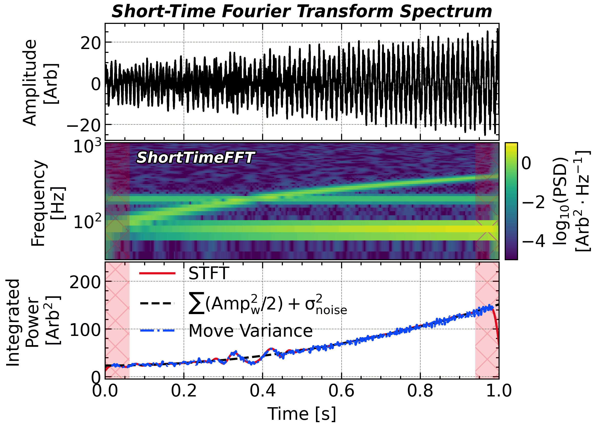
# widths = bandwidth * scales / (2 * np.pi)
# coef = scipy.signal.cwt(
# signal,
# scipy.signal.morlet2,
# widths = widths,
# w = bandwidth,
# dtype = np.complex128
# )
# frequency = 1 / dt / scales
# === Option 2: pywt implementation ===
# Unlike scipy.signal.cwt, pywt.cwt is not L2-normalized.
# You need to multiply the coefficients by a factor to make them L2-normalized.
# Another two problems with pywt.cwt: The precision of the wavelet may be unenough while you can still not adjust the precision yourself.
# Check https://github.com/PyWavelets/pywt/issues/531
# This defect has been proposed at 2019 but still not fixed yet.
# central_frequency = 1.0
# wavelet = 'cmor%.1f-%.1f' % (bandwidth, central_frequency)
# coef, frequency = pywt.cwt(signal, scales, wavelet, dt, method = 'fft')
# coef *= np.sqrt(np.sqrt(bandwidth) * np.sqrt(2 * np.pi)) # amplitude normalization for Morlet
# === Option 3: ssqueezepy implementation (default used here) ===
# This one is accurate and fast. They claim that this package is the fastest implementation of the wavelet transform in Python.
# bandwidthut, this implementation is not elegantly designed and the input parameters are not well documented.
# Also, it requires package numba, which may raise some compatibility issues.
# coef, scales = ssqueezepy.cwt(signal, ('morlet', {'mu': bandwidth}), scales = bandwidth / (2 * np.pi) * scales.astype(np.float32), fs = 1 / dt, l1_norm = False)
# frequency = bandwidth / (2 * np.pi) / dt / scales
plt.close()
plt.figure(figsize=(8, 6))
plt.subplots_adjust(hspace = 0.02, right = 0.82, left = 0.18)
ax1 = plt.subplot(3, 1, 1)
ax2 = plt.subplot(3, 1, 2, sharex=ax1)
ax3 = plt.subplot(3, 1, 3, sharex=ax1)
N = 2 ** 15
t = np.linspace(0, 1, N)
dt = t[1] - t[0]
fs = 1 / dt
omega = 250
# Generate a signal with 4 components:
# 1. Sinuoidal; 2. Growing Sinuoidal; 3. Chirping Sinuoidal; 4. White noise
sig = 3 * np.sin(5 * omega * t) + 16 * t * np.sin(2 * omega * t) + 6 * np.sin(2 * omega * (2 * t + 1) * t)
noise_level = 1.0
sig += np.random.randn(N) * noise_level
ax1.plot(t, sig, 'k-', label = 'Signal')
ax1.autoscale(axis='x', tight=True)
step = 100
window = 2048
window_in_seconds = window * dt # window length in seconds
mfft = window * 5
hann_window = scipy.signal.windows.hann(window, sym = True) # symmetric Gaussian window
STFT = scipy.signal.ShortTimeFFT(hann_window, hop=step, fs = fs, scale_to='psd', fft_mode = 'onesided2X', mfft = mfft) # create the STFT object
stft_psd = STFT.stft(sig) # perform the STFT
stft_time = np.arange(0, stft_psd.shape[1]) * STFT.hop / fs - STFT.win.size / 2 / fs # time vector for STFT
stft_frequency = np.fft.rfftfreq(mfft, d=dt) # frequency vector for STFT
stft_psd = np.abs(stft_psd) ** 2
# stft_psd[0, :] *= 0.0
pc2 = ax2.pcolormesh(stft_time, stft_frequency, np.log10(stft_psd), cmap=cmap, vmax=.5, vmin=-2.0)
for ax in [ax2, ax3]:
ax.axvspan(stft_time[0], STFT.lower_border_end[0] * STFT.T, color='C1', linewidth=0, alpha=.2)
ax.axvspan(STFT.upper_border_begin(sig.size)[0] * STFT.T, stft_time[-1], color='C1', linewidth=0, alpha=.2)
ax2.set_yscale('log')
df = np.diff(stft_frequency)[0]
integrated_stft_psd = np.nansum((stft_psd.T * df), axis=1)
ax3.plot(stft_time, integrated_stft_psd, 'C1', label='STFT')
# Theoretical PSD defined as half of the sum of the square of amplitudes of the components
ax3.plot(t, np.ones_like(t) * (3 ** 2 + (16 * t) ** 2 + 6 ** 2 + 2 * noise_level ** 2) / 2, 'k--', label=r'$\frac{1}{2}{\mathrm{Amp_{w}^2} + \sigma_{noise}^2}$')
ax3.legend(frameon=False, ncols = 1, loc = 'upper center')
ax2.autoscale(axis='y', tight=True)
ax1.autoscale(axis='x', tight=True)
# ax1.set_xlim(0, 1)
ax2.set_ylim(18, 600)
ax3.set_ylim(-5, 240)
ax3.set_xlabel('Time [s]')
ax1.set_ylabel('Amplitude\n[Arb]')
ax2.set_ylabel('Frequency\n[Hz]')
ax3.set_ylabel('Integrated\nPower\n[$\mathrm{Arb}^2$]')
plt.setp(ax1.get_xticklabels(), visible=False)
plt.setp(ax2.get_xticklabels(), visible=False)
fig = plt.gcf()
cbar_ax2 = fig.add_axes(
[ax2.get_position().x1 + 0.01, ax2.get_position().y0, 0.02, ax2.get_position().y1 - ax2.get_position().y0])
cbar2 = plt.colorbar(pc2, cax=cbar_ax2)
cbar2.ax.xaxis.set_label_position('top')
cbar2.ax.xaxis.set_ticks_position('top')
cbar2.ax.tick_params(which='major', length=4, direction='in', pad=3)
cbar2.ax.set_ylabel('$\mathrm{log_{10}(PSD)}$\n$\mathrm{[Arb^2 \cdot Hz^{-1}]}$')
ax1.set_title('Short-Time Fourier Transform Spectrum', **title_font)
# plt.savefig(save_path + 'figure_stft' + '.png',bbox_inches='tight',dpi=300)
plt.show()The STFT spectra of a signal that consists of a growing wave, a chriping wave, and a contant wave.
The red hashed region indicates the cone of influence (COI), which represents the area where edge effects may distort the STFT results due to the finite length of the signal and windowing. The COI is typically defined as half the window length on either side of the time axis, beyond which the STFT results should be interpreted with caution. The affected results is sensitive to the padding method and therefore more subjective. Thus they are often masked out in visualizations to highlight the reliable region of the time-frequency representation.
Application: Recovering the Signal from a Spectrogram (Phase Retrieval)
A spectrogram plots only |S(f,t)| — the STFT magnitude. The phase is discarded, and with it, apparently, the waveform. But an STFT with overlapping windows is redundant: every sample is described by several frames, so the magnitude alone holds more numbers than the signal has samples. Neighbouring frames must agree about the samples they share, and essentially only one phase assignment lets them — the redundancy carries the phase in disguise. The demo below works at 50 % overlap, barely two numbers per sample, to show the recovery succeeding even at half the usual redundancy.
The Griffin–Lim algorithm recovers it by alternating two projections: enforce consistency (inverse-transform, then forward-transform — snap to something a real signal could produce), then restore the given magnitudes (keep only the negotiated phase). Started from random phase, a couple hundred rounds turn noise-phase garbage back into intelligible speech:
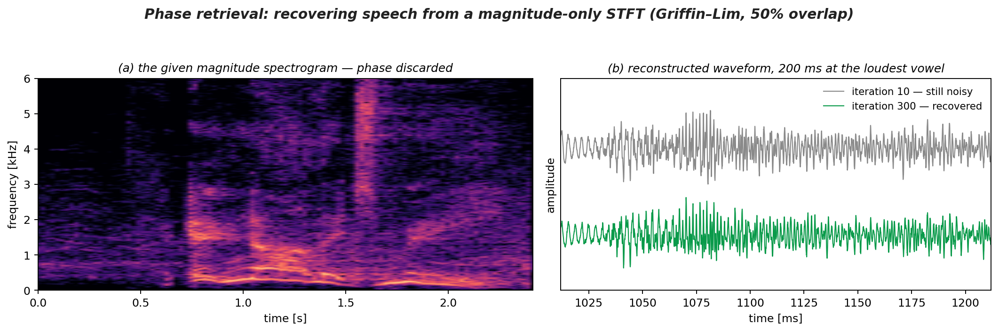
import numpy as np, scipy.signal as sig
nper, hop = 1024, 512 # 50% overlap -> only ~2x redundancy
nov = nper - hop
_, _, S = sig.stft(y, fs, nperseg=nper, noverlap=nov)
A = np.abs(S) # the spectrogram: magnitude ONLY
X = A * np.exp(2j*np.pi*np.random.rand(*A.shape)) # start from random phase
for k in range(300): # Griffin-Lim iterations
_, x = sig.istft(X, fs, nperseg=nper, noverlap=nov) # -> signal domain
_, _, Sx = sig.stft(x, fs, nperseg=nper, noverlap=nov) # -> a CONSISTENT stft
X = A * np.exp(1j * np.angle(Sx)) # keep our magnitude
_, x_rec = sig.istft(X, fs, nperseg=nper, noverlap=nov) # recovered speechSpeech recovered from a magnitude-only spectrogram at 50 % overlap: the waveform at iteration 10 is still noisy; by iteration 300 the frames have negotiated a consistent phase. Overlap is what makes it work — with disjoint frames, any phase is self-consistent and the iteration never improves.
Listen to the convergence — all four clips share the same magnitude spectrogram and differ only in phase:
| original |
iteration 1 random phase |
iteration 5 |
iteration 300 recovered |
The same “phase problem” rules X-ray crystallography, where detectors record only |\mathcal{F}\{\rho\}|^2; and every neural vocoder in modern text-to-speech is trained to solve exactly this task — spectrogram in, phase out. See the gallery example for the full derivation, the overlap comparison, and the honest limits.
Continuous Wavelet Transform ssqueezepy.cwt and pywt.cwt
Although the STFT can represent a signal on the time–frequency plane, it does so with a fixed window: a short window yields good resolution at high frequencies but blurs low-frequency components, while a long window does the opposite—there is no way to optimize both simultaneously.
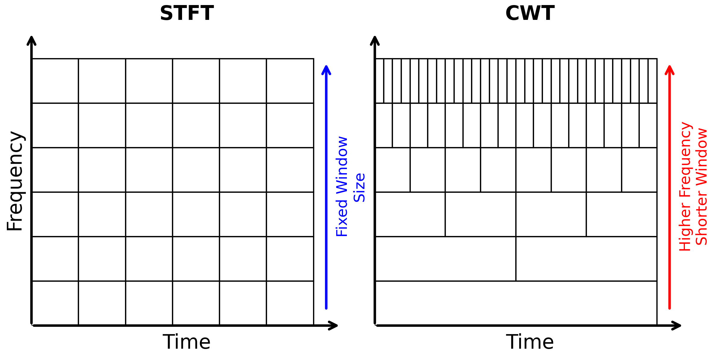
import matplotlib.pyplot as plt
import matplotlib.patches as patches
# 新建画布，1×2 子图
fig, axes = plt.subplots(1, 2, figsize=figsize_short, constrained_layout=True, sharex = True, sharey = True)
# === (a) Uniform FT tiling ===
ax = axes[0]
ax.set_title('STFT', pad=10, **title_font)
ax.set_xlim(0, 1); ax.set_ylim(0, 1)
ax.set_xlabel('Time'); ax.set_ylabel('Frequency')
# 箭头坐标轴
ax.annotate('', xy=(1, 0), xycoords='axes fraction', xytext=(0, 0),
arrowprops=dict(arrowstyle='->', lw=2, mutation_scale=15))
ax.annotate('', xy=(0, 1), xycoords='axes fraction', xytext=(0, 0),
arrowprops=dict(arrowstyle='->', lw=2, mutation_scale=15))
# 隐藏多余边框与刻度
ax.spines['top'].set_visible(False); ax.spines['right'].set_visible(False)
ax.spines['bottom'].set_visible(False); ax.spines['left'].set_visible(False)
ax.set_xticks([]); ax.set_yticks([])
# 绘制均匀网格（6×6）
n = 6
for i in range(n):
for j in range(n):
rect = patches.Rectangle((i/n, j/n), 1/n, 1/n,
fill=False, edgecolor='black', linewidth=1)
ax.add_patch(rect)
# === (b) Scale-dependent (Wavelet) tiling ===
ax = axes[1]
ax.set_title('CWT', pad=10, **title_font)
ax.set_xlim(0, 1); ax.set_ylim(0, 1)
ax.set_xlabel('Time'); ax.set_ylabel('Frequency')
ax.annotate('', xy=(1, 0), xycoords='axes fraction', xytext=(0, 0),
arrowprops=dict(arrowstyle='->', lw=2, mutation_scale=15))
ax.annotate('', xy=(0, 1), xycoords='axes fraction', xytext=(0, 0),
arrowprops=dict(arrowstyle='->', lw=2, mutation_scale=15))
ax.spines['top'].set_visible(False); ax.spines['right'].set_visible(False)
ax.spines['bottom'].set_visible(False); ax.spines['left'].set_visible(False)
ax.set_xticks([]); ax.set_yticks([])
# 以 4 个尺度为例：低频（i=0）1 个宽窗口→高频（i=3）8 个窄窗口
n_scales = 6
for i in range(n_scales):
y0 = i / n_scales
band_h = 1 / n_scales
n_win = 2 ** i
for k in range(n_win):
rect = patches.Rectangle((k/n_win, y0), 1/n_win, band_h,
fill=False, edgecolor='black', linewidth=1)
ax.add_patch(rect)
# Add an arrow and annotation on the right side of axes[1]
axes[1].annotate('', xy=(0.95, 0.9), xycoords='axes fraction',
xytext=(.95, 0.05), textcoords='axes fraction',
arrowprops=dict(arrowstyle='->', lw=2, mutation_scale=15, color='red'),
ha='center', va='center', fontsize=12, color='red', rotation=90)
axes[1].text(1.03, 0.475, 'Higher Frequency\nShorter Window', color='red', rotation = 90, va = 'center', ha = 'center',
fontsize=12, transform=axes[1].transAxes)
axes[0].annotate('', xy=(0.95, 0.9), xycoords='axes fraction',
xytext=(.95, 0.05), textcoords='axes fraction',
arrowprops=dict(arrowstyle='->', lw=2, mutation_scale=15, color='blue'),
ha='center', va='center', fontsize=12, color='blue', rotation=90)
axes[0].text(1.03, 0.475, 'Fixed Window\nSize', color='blue', rotation=90, va='center', ha='center',
fontsize=12, transform=axes[0].transAxes)
axes[1].set_ylabel("")
axes[0].set_xlim(0, 1.1)
axes[0].set_ylim(0, 1.1)
plt.savefig(save_path + 'figure_stft_vs_cwt.png',bbox_inches='tight',dpi=300)
plt.show()The wavelet transform turns this static trade-off into an adaptive resolution by scaling its analysis “window” with frequency—long windows for low frequencies and short windows for high frequencies—making it particularly well-suited to multiscale, transient features in non-stationary signals.
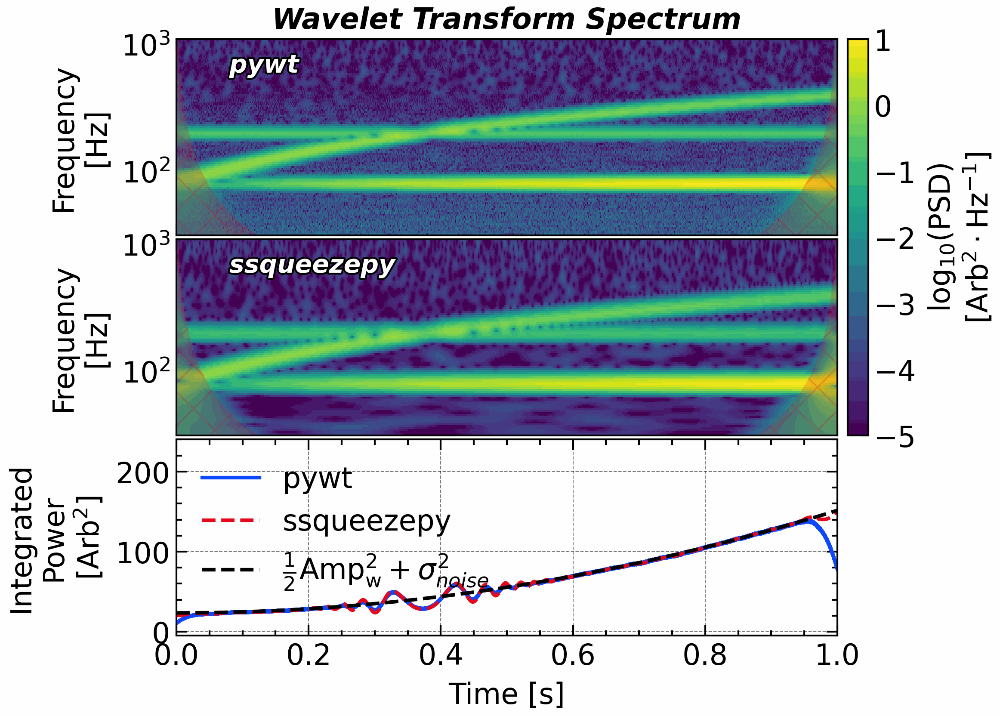
import pywt
import ssqueezepy
plt.close()
plt.figure(figsize=(8, 6))
plt.subplots_adjust(hspace = 0.02, right = 0.82, left = 0.18)
ax1 = plt.subplot(3, 1, 1)
ax2 = plt.subplot(3, 1, 2, sharex=ax1, sharey = ax1)
ax3 = plt.subplot(3, 1, 3, sharex=ax1)
N = 2 ** 15
t = np.linspace(0, 1, N)
dt = t[1] - t[0]
fs = 1 / dt
omega = 250
sig = 3 * np.sin(5 * omega * t) + 16 * t * np.sin(2 * omega * t) + 6 * np.sin(2 * omega * (2 * t + 1) * t)
noise_level = 1.0
sig += np.random.randn(N) * noise_level
scales = 2 ** np.linspace(4, 12, 160, endpoint = False)
B = 16
bandwidth = B
central_frequency = 1.0
wavelet = 'cmor%.1f-%.1f' % (bandwidth, central_frequency)
coef, freq = pywt.cwt(sig, scales, wavelet, dt, method = 'fft')
coef *= np.sqrt(np.sqrt(bandwidth) * np.sqrt(2 * np.pi)) # amplitude normalization for Morlet
psd = (np.abs(coef) ** 2) * (2 * dt)
df = (freq[0] / freq[1] - 1) * freq / np.sqrt(freq[0] / freq[1])
pc1 = ax1.pcolormesh(t, freq, np.log10(psd), cmap = cmap, vmax=1, vmin=-5.0)
ax3.plot(t, np.nansum(psd.T * df, axis = -1), 'C0', label = 'pywt')
mu = np.pi * np.sqrt(2 * B)
# coef, scales = ssqueezepy.cwt(sig, ('morlet', {'mu': bandwidth}), scales = bandwidth / (2 * np.pi) * scales.astype(np.float32), fs = 1 / dt, l1_norm = False)
coef, scales = ssqueezepy.cwt(sig, ('morlet', {'mu': mu}), nv = 20, fs = 1 / dt, l1_norm = False, scales = 'log')
freq = bandwidth / (2 * np.pi) / dt / scales
df = (freq[0] / freq[1] - 1) * freq / np.sqrt(freq[0] / freq[1])
psd = (np.abs(coef) ** 2) * (2 * dt)
pc2 = ax2.pcolormesh(t, freq, np.log10(psd), cmap = cmap, vmax=1, vmin=-5.0)
ax3.plot(t, np.nansum(psd.T * df, axis = -1), label = 'ssqueezepy')
ax2.set_xlim(t[0], t[-1])
coi = (np.sqrt(4) * 2 * B / (2 * np.pi) / freq).astype(float)
ax1.fill_betweenx(freq, x1 = t[0], x2 = t[0] + coi, alpha = 0.2, color = 'C1', hatch = 'x', edgecolor = 'none')
ax1.fill_betweenx(freq, x1 = t[-1], x2 = t[-1] - coi, alpha = 0.2, color = 'C1', hatch = 'x', edgecolor = 'none')
ax2.fill_betweenx(freq, x1 = t[0], x2 = t[0] + coi, alpha = 0.2, color = 'C1', hatch = 'x', edgecolor = 'none')
ax2.fill_betweenx(freq, x1 = t[-1], x2 = t[-1] - coi, alpha = 0.2, color = 'C1', hatch = 'x', edgecolor = 'none')
ax2.set_yscale('log')
# df = np.diff(stft_frequency)[0]
# integrated_stft_psd = np.nansum((stft_psd.T * df), axis=1)
# ax3.plot(stft_time, integrated_stft_psd, 'C1', label='STFT')
# Theoretical PSD defined as half of the sum of the square of amplitudes of the components
ax3.plot(t, np.ones_like(t) * (3 ** 2 + (16 * t) ** 2 + 6 ** 2 + 2 * noise_level ** 2) / 2, 'k--', label=r'$\frac{1}{2}{\mathrm{Amp_{w}^2} + \sigma_{noise}^2}$')
# ax2.autoscale(axis='y', tight=True)
# ax1.autoscale(axis='x', tight=True)
# ax1.set_xlim(0, 1)
ax1.set_ylim(31, 1100)
ax3.set_ylim(-5, 240)
ax3.set_xlabel('Time [s]')
ax1.set_ylabel('Frequency\n[Hz]')
ax2.set_ylabel('Frequency\n[Hz]')
ax3.set_ylabel('Integrated\nPower\n[$\mathrm{Arb}^2$]')
ax1.text(0.08, 600, 'pywt', color = 'w', fontsize = 14, path_effects = path_effect, weight = 'bold', fontstyle = 'italic')
ax2.text(0.08, 600, 'ssqueezepy', color = 'w', fontsize = 14, path_effects = path_effect, weight = 'bold', fontstyle = 'italic')
plt.setp(ax1.get_xticklabels(), visible=False)
plt.setp(ax2.get_xticklabels(), visible=False)
fig = plt.gcf()
cbar_ax2 = fig.add_axes(
[ax2.get_position().x1 + 0.01, ax2.get_position().y0, 0.02, ax1.get_position().y1 - ax2.get_position().y0])
cbar2 = plt.colorbar(pc2, cax=cbar_ax2)
cbar2.ax.xaxis.set_label_position('top')
cbar2.ax.xaxis.set_ticks_position('top')
cbar2.ax.tick_params(which='major', length=4, direction='in', pad=3)
# cbar2.ax.xaxis.set_ticks([])
cbar2.ax.set_ylabel('$\mathrm{log_{10}(PSD)}$\n$\mathrm{[Arb^2 \cdot Hz^{-1}]}$')
ax1.set_title('Wavelet Transform Spectrum', **title_font)
# ax3.legend(frameon=False, ncols = 1, loc = 'upper left')
ax3.legend(frameon=False, ncols = 1, loc = 'upper left', bbox_to_anchor = (0.05, 1.1))
# plt.savefig(save_path + 'figure_wavelet' + '.png',bbox_inches='tight',dpi=300)
plt.show()Formally, both methods project the signal onto a family of basis functions via inner products: the STFT uses windowed sinusoids as its basis, whereas the continuous wavelet transform replaces the sinusoid with a scalable, time-localized “wavelet.” It is this additional scale parameter that provides the core advantage of wavelet analysis, as we will explore in the next section.
In Python, there are two classic packages for performing continuous wavelet transforms: pywt and ssqueezepy. As shown below, pywt offers a comprehensive set of basic features, while ssqueezepy delivers high computational efficiency and supports synchrosqueezing wavelets. Older versions of Scipy also provided a cwt function, but this functionality has been deprecated in more recent releases.
import pywt
import ssqueezepy
N_per_octave = 12
scales = 2 ** np.linspace(4, 12, 8 * N_per_octave, endpoint = False)
bandwidth = 12.0
central_frequency = 1.0
# pywavelets
wavelet = 'cmor%.1f-%.1f' % (bandwidth, central_frequency)
coef, f = pywt.cwt(sig, scales, wavelet, dt, method = 'fft')
coef *= np.sqrt(np.sqrt(bandwidth) * np.sqrt(2 * np.pi)) # amplitude normalization for Morlet
psd = (np.abs(coef) ** 2) * (2 * dt)
df = (f[0] / f[1] - 1) * f / np.sqrt(f[0] / f[1])
# ssqueezepy
coef, scales = ssqueezepy.cwt(sig, ('morlet', {'mu': bandwidth}), scales = bandwidth / (2 * np.pi) * scales.astype(np.float32), fs = 1 / dt, l1_norm = False)
freq = (bandwidth + np.sqrt(bandwidth ** 2 + 2)) / 2 / (2 * np.pi) / dt / scales
df = (freq[0] / freq[1] - 1) * freq / np.sqrt(freq[0] / freq[1])
psd = (np.abs(coef) ** 2) * (2 * dt)
coi = (np.sqrt(4) * bandwidth / (2 * np.pi) / f).astype(float)The COI of wavelet is defined as the e-folding time of the wavelet at each scale, which is the time it takes for the wavelet amplitude to decay to 1/e of its maximum value.
Torrence & Compo (1998) give a very impressive summary of the CWT and its application to geophysical time series, which is widely cited in various fields. They recommend using the Morlet wavelet with a non-dimensional frequency \omega_0=6 for general-purpose analysis, as it provides a good balance between time and frequency localization.
Morlet Wavelet
Morlet (or Gabor) wavelet is one of the most commonly-used continuous mother wavelet, which has the approximate form of:
\psi_{approx}(\eta):=\pi^{-1/4} {e^{-{\eta^2}/{2}}} \cdot {e^{i\omega_0\eta}}
with scale function \eta=s\cdot t where s denotes scale in the large \omega_0 domain.
This mother wavelet is a Gaussian-windowed complex sinusoid, which provides a good balance between time and frequency localization. The parameter \omega_0 is the non-dimensional frequency, which controls the number of oscillations within the Gaussian envelope. A common choice is \omega_0=6, which provides a good trade-off between time and frequency resolution.
- Parameter Relationships in Different Literatures: Different implementations of the Morlet wavelet use different parameterizations. The following diagram summarizes the relationships among the parameters \mu, B, and \sigma used in various references and libraries.
graph LR
A[*Torrence & Compo 1998*] --μ=omega_0--> B[*ssqueezepy*]
A --B=fracomega_0^22π^2-->C[*pywavelets*<br>*'cmorB-1.0'*]
A --σ=omega_0--> D[*Wikipedia*]
Application: The First Detection of Gravitational Waves (GW150914)
On 14 September 2015 the two LIGO interferometers recorded GW150914 — the first direct detection of gravitational waves, radiated by two black holes (~36 and ~29 M_\odot) spiralling together ~1.3 billion light-years away. The signal is the textbook example of a chirp: as the black holes inspiral, both the amplitude and the frequency of the strain sweep upward, until the merger. A single Fourier transform would smear this entirely — it is exactly the non-stationary signal that time–frequency analysis exists to expose.
Physically, the waveform is the binary’s life in three acts:
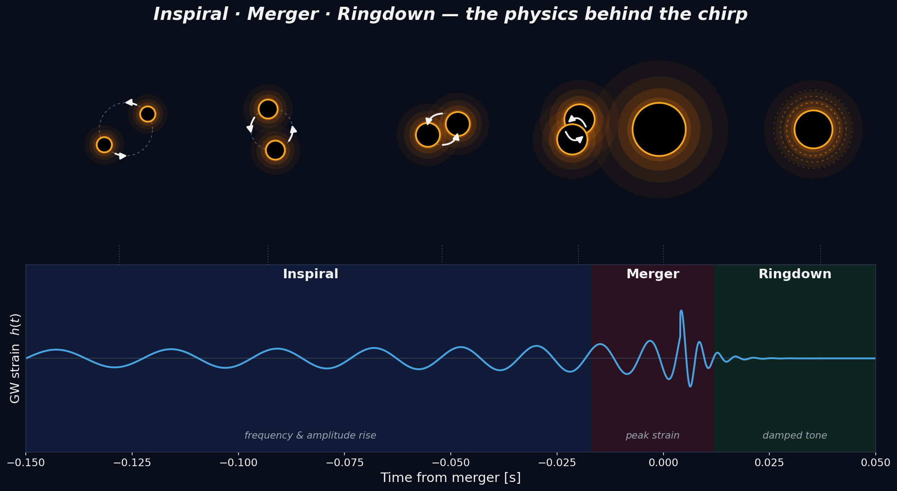
The two black holes inspiral — the strain’s frequency and amplitude rising together (the chirp) — then merge at peak strain, and the single remnant rings down through damped oscillations to a quiescent Kerr black hole. The upward sweep you read off the wavelet scalogram below is this inspiral; the brief damped tail after the peak is the ringdown.
The raw strain is dominated by the detector’s coloured noise (seismic at low frequency, thermal and shot noise elsewhere), so a real GW pipeline first whitens it — dividing every Fourier bin by the local noise amplitude so that all frequencies carry equal weight — and then band-passes to the sensitive band. With that done, the buried chirp emerges in both detectors at once:
- One panel per detector — LIGO Hanford (top) and LIGO Livingston (bottom). Each shows the Morlet-wavelet (CWT) scalogram of that detector’s whitened strain; the band-passed strain itself is drawn as the wiggling line over the time of interest (the last ~0.15 s), and the vertical I-beam at the left gives its amplitude — about 5\sigma of the whitened-noise level.
- In both detectors the same bright track sweeps up — from ~35 Hz to past ~250 Hz in the final ~0.2 s — the inspiral chirp, ending at the merger. Two independent instruments, 3000 km apart, recording the identical sweep is the core of the detection’s credibility.
- The white outline is the 99.7 % (3\sigma) significance contour: the wavelet power exceeding the \chi^2_2 confidence level of an AR(1) red-noise background (Torrence & Compo). The chirp clears it comfortably in both detectors; essentially nothing in the surrounding noise does.
- Because the wavelet’s window narrows in time as the frequency rises (constant-Q), it tracks the rapidly accelerating chirp far more cleanly than a fixed-window STFT could — exactly what the continuous wavelet transform built above is for.
The public strain comes from the Gravitational Wave Open Science Center (GWOSC), 4096 Hz, 32 s around the event.
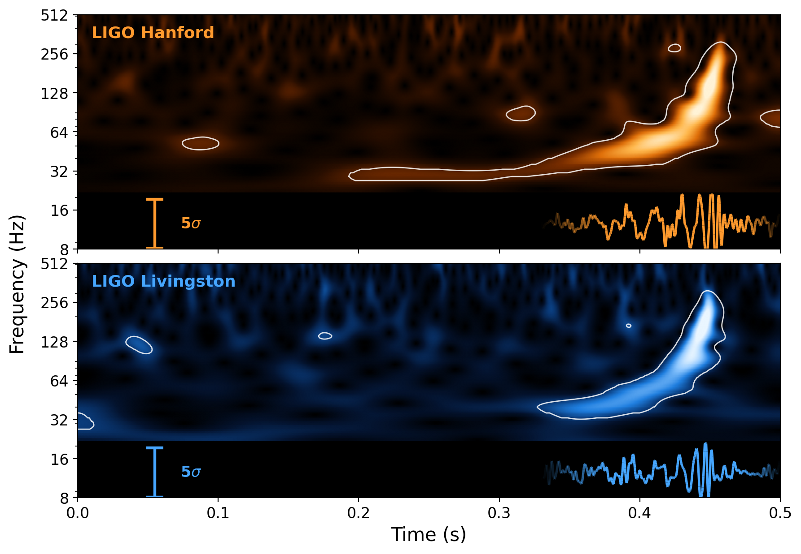
import numpy as np, urllib.request
import scipy.signal as sig, scipy.interpolate, scipy.stats, ssqueezepy
import matplotlib.pyplot as plt, matplotlib.colors as mcolors
from matplotlib.colors import LinearSegmentedColormap
from matplotlib.collections import LineCollection
from scipy.ndimage import gaussian_filter
from ssqueezepy.experimental import scale_to_freq
fs = 4096; dt = 1 / fs
tm = 16.422; t0 = tm - 0.45 # window start -> x runs 0..0.5 s
# --- LIGO Open Science Center strain (4096 Hz, 32 s around GW150914) ---
base = 'https://gwosc.org/s/events/GW150914/'
def fetch(tag):
fn = f'{tag}_LOSC_4_V2-1126259446-32.txt.gz'
urllib.request.urlretrieve(base + fn, fn)
return np.loadtxt(fn) # 3 header lines auto-skipped (comments='#')
H1, L1 = fetch('H-H1'), fetch('L-L1')
t = np.arange(len(H1)) * dt
def whiten(x): # flatten the coloured detector noise
f, Pxx = sig.welch(x, fs=fs, nperseg=4 * fs)
psd = scipy.interpolate.interp1d(f, Pxx, bounds_error=False, fill_value=np.inf)
freqs = np.fft.rfftfreq(len(x), dt)
return np.fft.irfft(np.fft.rfft(x) / np.sqrt(psd(freqs) / dt / 2.), n=len(x))
bb, ab = sig.butter(4, [30, 350], btype='band', fs=fs)
cmap_H = LinearSegmentedColormap.from_list('H', ['#000000','#2a0f00','#7a2e00','#e0700a','#ffb84d','#fff3d6'])
cmap_L = LinearSegmentedColormap.from_list('L', ['#000000','#04132e','#0a3b7a','#1f7fe0','#8fc8ff','#eaf6ff'])
yc, kk, Sbar = 12.5, 0.038, 5.0 # trace baseline (Hz), log-gain, scale bar (sigma)
def gradient_line(ax, x, y, color, lw): # line whose truncated ends fade out in alpha
a = np.clip((x - x[0]) / 0.05, 0, 1) * np.clip((x[-1] - x) / 0.025, 0, 1)
pts = np.array([x, y]).T.reshape(-1, 1, 2)
seg = np.concatenate([pts[:-1], pts[1:]], axis=1)
rgba = np.tile([*mcolors.to_rgb(color), 1.0], (len(seg), 1)); rgba[:, 3] = 0.5*(a[:-1] + a[1:])
ax.add_collection(LineCollection(seg, colors=rgba, linewidths=lw))
fig, (axH, axL) = plt.subplots(2, 1, figsize=(9, 6.2), sharex=True)
fig.subplots_adjust(hspace=0.06, left=0.115, right=0.985, top=0.985, bottom=0.115)
for ax, raw, cmap, wcol, label in [(axH, H1, cmap_H, '#ff9a2e', 'LIGO Hanford'),
(axL, L1, cmap_L, '#46a6ff', 'LIGO Livingston')]:
Xw = whiten(raw)
mw = (t > t0) & (t < tm + 0.05); xw = t[mw] - t0 # 0 .. 0.5 s
Wx, scales = ssqueezepy.cwt(Xw[mw], ('morlet', {'mu': 6}), fs=fs, l1_norm=False)
freqs = scale_to_freq(scales, ('morlet', {'mu': 6}), mw.sum(), fs=fs)
sel = (freqs >= 22) & (freqs <= 512); fr = freqs[sel]; Pw = np.abs(Wx[sel])**2
ax.pcolormesh(xw, fr, np.sqrt(Pw), shading='gouraud', cmap=cmap,
vmax=np.percentile(np.sqrt(Pw)[:, xw > 0.30], 99.6))
# --- AR(1) red-noise 99% significance contour (Torrence & Compo) ---
x = Xw[mw] - Xw[mw].mean()
a1 = max(np.corrcoef(x[:-1], x[1:])[0, 1], 0.0) # lag-1 autocorrelation
Pbg = (1 - a1**2) / (1 + a1**2 - 2*a1*np.cos(2*np.pi*fr/fs)) # red-noise background spectrum
noise = xw < 0.25
cal = np.median(Pw[:, noise].mean(1) / Pbg) # calibrate amplitude to the noise
sig = cal * Pbg * scipy.stats.chi2(2).ppf(0.997) / 2 # 99.7% (3 sigma): chi2_2/2 = 5.81
R = gaussian_filter(Pw, sigma=(1.6, 22.0)) / sig[:, None]
ax.contour(xw, fr, R, levels=[1.0], colors='w', linewidths=1.0, alpha=0.85)
# --- whitened strain (sigma units), gradient-faded, over the time of interest ---
ws = sig.filtfilt(bb, ab, Xw)[mw]; ws = ws / ws[noise].std()
keep = xw > 0.33
gradient_line(ax, xw[keep], yc*10**(kk*np.clip(ws[keep], -6, 6)), wcol, 1.9)
xb = 0.055 # vertical I-beam: amplitude in sigma
ax.errorbar([xb], [yc], yerr=[[yc - yc*10**(-kk*Sbar)], [yc*10**(kk*Sbar) - yc]],
fmt='none', ecolor=wcol, elinewidth=2.3, capsize=7, capthick=2.3)
ax.text(xb + 0.018, yc, f'{Sbar:.0f}$\\sigma$', color=wcol, fontsize=12, va='center', ha='left', fontweight='bold')
ax.set_yscale('log'); ax.set_ylim(8, 512); ax.set_xlim(0, 0.5)
ax.set_yticks([8, 16, 32, 64, 128, 256, 512]); ax.set_yticklabels([8, 16, 32, 64, 128, 256, 512])
ax.tick_params(labelsize=12)
ax.text(0.02, 0.92, label, transform=ax.transAxes, color=wcol, fontsize=13, fontweight='bold', va='center')
ax.set_facecolor('black')
axL.set_xlabel('Time (s)', fontsize=15); fig.supylabel('Frequency (Hz)', fontsize=15, x=0.03)
plt.savefig(save_path + 'figure_ligo_gw150914.png', bbox_inches='tight', dpi=200, facecolor='white')Discrete Wavelet Transform
The Discrete Wavelet Transform (DWT) decomposes a signal into approximation coefficients (representing low-frequency components that capture the coarse structure) and detail coefficients (representing high-frequency components that capture rapid changes and local details). In contrast to the FFT—which decomposes a signal into sine and cosine functions spanning the entire duration—the DWT breaks the signal into wavelets that are localized in both time and frequency. This inherent multi-resolution analysis enables the DWT to capture transient time-domain information while still revealing its frequency content, effectively offering both temporal and spectral insights.
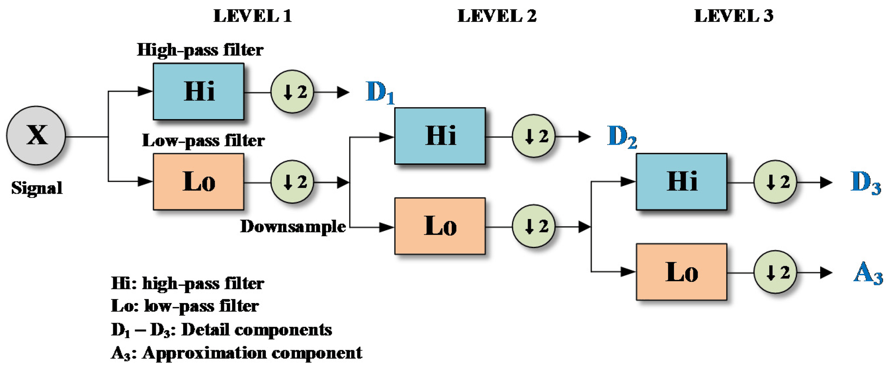
The decomposition can be iteratively applied, resulting in multi-level DWT, offering multi-resolution analysis. Reconstruction from these coefficients exactly recovers the original signal (except minor numerical errors).
- Single-Level DWT Example
Let’s perform single-level decomposition and reconstruction:
import pywt
sig = [1, 2, 3, 4, 5, 6]
cA, cD = pywt.dwt(sig, 'db1') # Haar wavelet
print("Approximation (cA):", cA)
# lessCopyEditApproximation (cA): [2.12, 4.95, 7.78]
print("Detail (cD):", cD)
# Detail (cD): [-0.71, -0.71, -0.71]
# Reconstruction
reconstructed = pywt.idwt(cA, cD, 'db1')
print("Reconstructed:", reconstructed)
# Reconstructed: [1. 2. 3. 4. 5. 6.]- Multi-Level DWT Example
Multi-level decomposition provides more granular frequency analysis. Here’s a two-level decomposition example:
import pywt
sig = [1, 2, 3, 4, 5, 6, 7, 8]
coeffs = pywt.wavedec(sig, 'db1', level=2)
cA2, cD2, cD1 = coeffs
print("cA2:", cA2)
# cA2: [ 5. 13.]
print("cD2:", cD2)
# cD2: [-2. -2.]
print("cD1:", cD1)
# cD1: [-0.71 -0.71 -0.71 -0.71]
reconstructed = pywt.waverec(coeffs, 'db1')
print("Reconstructed:", reconstructed)
# Reconstructed: [1. 2. 3. 4. 5. 6. 7. 8.]Here, different levels represent signal features at different frequency bands.
Different wavelet families (e.g., Daubechies, Symlets, Coiflets, Biorthogonal) offer various trade-offs in terms of compact support, symmetry, and vanishing moments. The choice of wavelet affects the decomposition quality and should be selected based on the signal characteristics and analysis goals.
DWT Thresholding for Signal Denoising
Wavelet denoising leverages the idea that noise predominantly appears as low-amplitude coefficients, whereas meaningful signals appear as larger coefficients. We remove noise by applying a threshold to detail coefficients, retaining major signal features.
Two common thresholding methods:
- Hard Thresholding: Sets coefficients smaller than threshold to zero, others remain unchanged (may cause discontinuities).
- Soft Thresholding: Smoothly reduces coefficients above the threshold towards zero (creates smoother results).
We generate a noisy sinusoidal signal and denoise it using soft thresholding.
Steps:
Decompose signal using DWT.
Estimate noise level \sigma from detail coefficients and compute threshold: T = \sigma \sqrt{2\ln(N)}
Apply soft thresholding to detail coefficients.
Reconstruct the denoised signal.
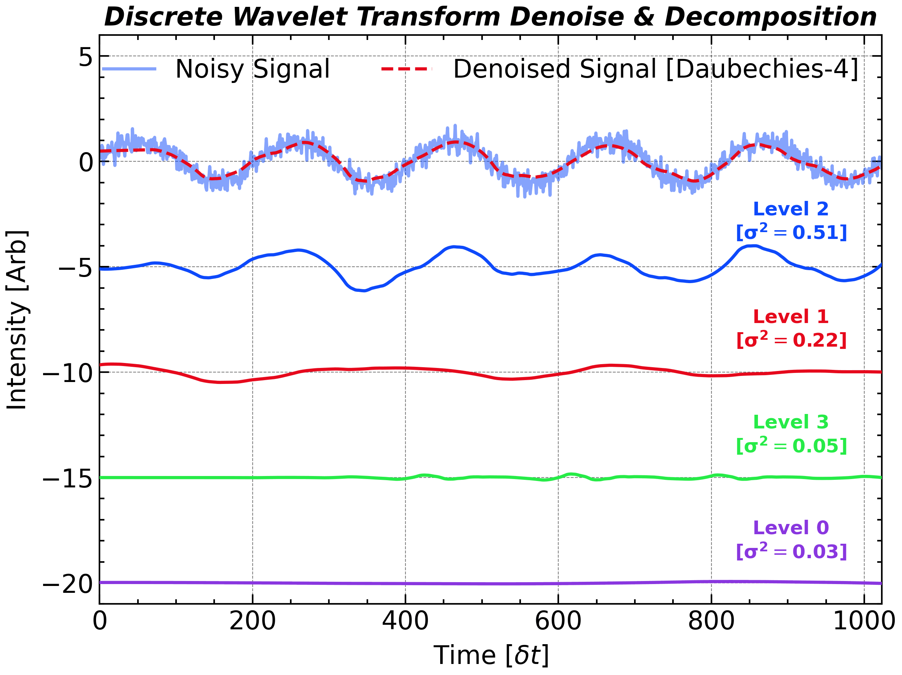
# Generate synthetic noisy sinusoidal signal
np.random.seed(0)
N = 2 ** 10
t = np.linspace(0, 1, N)
sig_clean = np.sin(2 * np.pi * 5 * t)
sig_nosiy = sig_clean + np.random.normal(0, 0.3, size=N)
level = 9
# Wavelet decomposition
wavelet = 'db4'
cA, *cDs = pywt.wavedec(sig_nosiy, wavelet, level = level)
# cA, cDs = coeffs[0], coeffs[1:]
# Threshold calculation
sigma = np.median(np.abs(cDs[-1])) / 0.6745
threshold = sigma * np.sqrt(2 * np.log(N))
# Soft thresholding
cDs_denoised = [pywt.threshold(d, threshold, mode='soft') for d in cDs]
# Reconstruction
sig_denoised = pywt.waverec([cA] + cDs_denoised, wavelet)
# coeffs = pywt.wavedec(sig_nosiy, wavelet, mode='periodization', level=level)
# cA_L, *cDs = coeffs # cDs = [D_L, D_{L-1}, …, D_1]
# -------- 2. 逐层重构到原长度 N --------
N = len(sig_nosiy)
reconA = pywt.upcoef('a', cA, wavelet, level=level, take=N)
reconDs = np.array([pywt.upcoef('d', cD, wavelet, level=lev, take=N)
for lev, cD in zip(range(level, 0, -1), cDs_denoised)])
reconDs_std = np.std(reconDs, axis=1)
reconDs = reconDs[np.argsort(-reconDs_std)]
reconDs_level = np.arange(0, level)[np.argsort(-reconDs_std)]
reconDs_std = reconDs_std[np.argsort(-reconDs_std)]
plt.close()
plt.figure(figsize = figsize_normal)
ax1 = plt.subplot()
offset = 0.0
idx = 0
for i in range(len(reconDs)):
if reconDs_std[i] > 0.01:
offset -= 5
ax1.plot(offset + reconDs[i], color = f"C{idx}", linestyle = '-', zorder = 10 - i)
ax1.text(
N - 120,
offset + 1 + reconDs[i][-1],
f'Level {reconDs_level[i]}\n' + r'[$\mathbf{\sigma^2}=$' + f'{reconDs_std[i]:.2f}]',
fontsize=12,
color=f"C{idx}",
ha='center',
va='bottom',
weight='bold'
)
idx += 1
ax1.set_ylim(-21, 6)
ax1.plot(sig_nosiy, label='Noisy Signal', alpha=0.5)
ax1.plot(sig_denoised, label='Denoised Signal [Daubechies-4]', color='C1')
ax1.legend(loc='upper right', frameon=False, ncol = 2)
ax1.set_ylabel('Intensity [Arb]')
ax1.set_xlabel('Time [$\delta t$]')
plt.autoscale(axis='x', tight=True)
ax1.set_title('Discrete Wavelet Transform Denoise & Decomposition', **title_font)
plt.tight_layout()
plt.savefig(save_path + 'figure_dwt_denoise.png',bbox_inches='tight',dpi=300)
plt.show()Example implementation:
# Generate synthetic noisy sinusoidal signal
np.random.seed(0)
N = 2 ** 10
t = np.linspace(0, 1, N)
sig_clean = np.sin(2 * np.pi * 5 * t)
sig_nosiy = sig_clean + np.random.normal(0, 0.3, size=N)
# Wavelet decomposition
wavelet = 'db4'
coeffs = pywt.wavedec(sig_nosiy, wavelet)
cA, cDs = coeffs[0], coeffs[1:]
# Threshold calculation
sigma = np.median(np.abs(details[-1])) / 0.6745
T = sigma * np.sqrt(2 * np.log(N))
# Soft thresholding
denoised_details = [pywt.threshold(d, T, mode='soft') for d in details]
# Reconstruction
denoised_signal = pywt.waverec([cA] + denoised_details, wavelet)The left plot shows the noisy signal. On the right, after soft thresholding denoising, the signal is smoother, closely approximating the original clean signal. Most noise is effectively removed, while preserving key signal features.
Got it. I’ll prepare a compact, tutorial-style summary of the listed wavelets, grouped by type, with intuitive descriptions and a couple of structured tables for clarity. I’ll also include an explanation of biorthogonal wavelets and their dual basis structure. I’ll let you know once it’s ready.
DWT Decomposition for Image Compression
2-dimensional DWT allows the scale decomposition for a 2-D object like an image. Its key advantage is the ability to perform multi-resolution analysis by breaking down the image into different frequency subbands. Typically, the 2D-DWT decomposes an image into one approximation subband (LL, or cA, for Approximated coefficient) that captures the coarse, low-frequency components, and three detail subbands (LH, HL, HH) that represent horizontal, vertical, and diagonal high-frequency details respectively. This decomposition not only facilitates efficient image compression by isolating and quantizing the less perceptually significant high-frequency details, but it also aids in tasks such as denoising and feature extraction, where preserving both spatial and spectral information is critical.
Worked example. We compress an 8-bit grey-scale photograph by replacing every detail coefficient whose magnitude is below a percentile-based threshold with zero, then reconstructing. Sweeping the threshold from 0\% (lossless) to 99\% (only the top 1\% of coefficients kept) traces out a rate-distortion curve: how many coefficients we keep versus the resulting peak signal-to-noise ratio (PSNR).
The Daubechies-4 (db4) basis is a good default — compactly supported, four vanishing moments, and orthogonal so the energy at each level is preserved. With 95\% of the coefficients zeroed the picture is still visually faithful, illustrating the strong sparsity that wavelet bases expose in natural images. This same principle underlies the wavelet-based JPEG-2000 codec.
import pywt
image = scipy.datasets.ascent().astype(float) # 512x512 sample image
wavelet, level = 'db4', 4
coeffs = pywt.wavedec2(image, wavelet=wavelet, level=level)
arr, slices = pywt.coeffs_to_array(coeffs)
ratios = [0.0, 0.5, 0.9, 0.95, 0.99] # fraction of coeffs zeroed
psnrs = []
for r in ratios:
if r == 0.0:
arr_c = arr.copy()
else:
thresh = np.quantile(np.abs(arr), r)
arr_c = np.where(np.abs(arr) >= thresh, arr, 0.0)
coeffs_c = pywt.array_to_coeffs(arr_c, slices, output_format='wavedec2')
image_recon = pywt.waverec2(coeffs_c, wavelet=wavelet)[: image.shape[0], : image.shape[1]]
mse = np.mean((image - image_recon) ** 2)
psnr = 10.0 * np.log10((image.max() ** 2) / max(mse, 1e-12))
psnrs.append(psnr)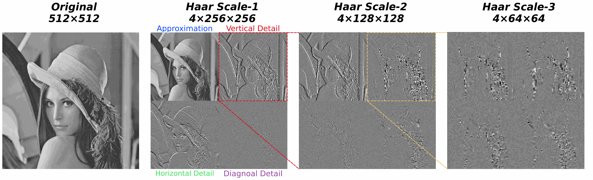
plt.close()
plt.figure(figsize = (13, 4.5))
ax1 = plt.subplot(1, 4, 1, aspect = 'equal')
ax2 = plt.subplot(1, 4, 2, aspect = 'equal', sharex = ax1, sharey = ax1)
ax3 = plt.subplot(1, 4, 3, aspect = 'equal', sharex = ax1, sharey = ax1)
ax4 = plt.subplot(1, 4, 4, aspect = 'equal', sharex = ax1, sharey = ax1)
ax1.set_title('Original\n%d×%d' % (original.shape), **title_font)
ax1.pcolormesh(np.linspace(0.0, 1., original.shape[0]), np.linspace(0.0, 1.0, original.shape[1]), original, cmap='gray', vmax = 1, vmin = 0)
cA, (cH, cV, cD) = pywt.dwt2(original, 'haar')
print('cA:%.3f, cH:%.3f, cV:%.3f, cD:%.3f' % (np.std(cA), np.std(cH), np.std(cV), np.std(cD)))
ax2.set_title('Haar Scale-1\n4×%d×%d' % (cA.shape), **title_font)
ax2.pcolormesh(np.linspace(0.0, 0.5, cA.shape[0]), np.linspace(0.5, 1.0, cA.shape[1]), cA, cmap='gray', vmax = 2, vmin = 0)
ax2.pcolormesh(np.linspace(0.5, 1.0, cV.shape[0]), np.linspace(0.5, 1.0, cV.shape[1]), cV, cmap='gray', vmax = 0.1, vmin = -0.1)
ax2.pcolormesh(np.linspace(0.0, 0.5, cH.shape[0]), np.linspace(0.0, 0.5, cH.shape[1]), cH, cmap='gray', vmax = 0.1, vmin = -0.1)
ax2.pcolormesh(np.linspace(0.5, 1.0, cD.shape[0]), np.linspace(0.0, 0.5, cD.shape[1]), cD, cmap='gray', vmax = 0.1, vmin = -0.1)
from matplotlib.patches import ConnectionPatch, Rectangle
rec = Rectangle((0.5, 0.5), 0.5, 0.5, linewidth=1, edgecolor='C1', facecolor='none', linestyle = '--')
ax2.add_patch(rec)
con = ConnectionPatch(xyA = (.5, 0.5), xyB = (0.0, 0.0), axesA=ax2, axesB=ax3, coordsA = ax2.transData, coordsB = ax3.transData, color='C1', linestyle = '--')
plt.gcf().add_artist(con)
con = ConnectionPatch(xyA = (1., 1.0), xyB = (0.0, 1.0), axesA=ax2, axesB=ax3, coordsA = ax2.transData, coordsB = ax3.transData, color='C1', linestyle = '--')
plt.gcf().add_artist(con)
cA, (cH, cV, cD) = pywt.dwt2(cV, 'haar')
print('cA:%.3f, cH:%.3f, cV:%.3f, cD:%.3f' % (np.std(cA), np.std(cH), np.std(cV), np.std(cD)))
ax3.set_title('Haar Scale-2\n4×%d×%d' % (cA.shape), **title_font)
ax3.pcolormesh(np.linspace(0.0, 0.5, cA.shape[0]), np.linspace(0.5, 1.0, cA.shape[1]), cA, cmap='gray', vmax = 0.2, vmin = -0.2)
ax3.pcolormesh(np.linspace(0.5, 1.0, cV.shape[0]), np.linspace(0.5, 1.0, cV.shape[1]), cV, cmap='gray', vmax = 0.2, vmin = -0.2)
ax3.pcolormesh(np.linspace(0.0, 0.5, cH.shape[0]), np.linspace(0.0, 0.5, cH.shape[1]), cH, cmap='gray', vmax = 0.2, vmin = -0.2)
ax3.pcolormesh(np.linspace(0.5, 1.0, cD.shape[0]), np.linspace(0.0, 0.5, cD.shape[1]), cD, cmap='gray', vmax = 0.2, vmin = -0.2)
rec = Rectangle((0.5, 0.5), 0.5, 0.5, linewidth=1, edgecolor='C4', facecolor='none', linestyle = '--')
ax3.add_patch(rec)
con = ConnectionPatch(xyA = (.5, 0.5), xyB = (0.0, 0.0), axesA=ax3, axesB=ax4, coordsA = ax3.transData, coordsB = ax4.transData, color='C4', linestyle = '--')
plt.gcf().add_artist(con)
con = ConnectionPatch(xyA = (1., 1.0), xyB = (0.0, 1.0), axesA=ax3, axesB=ax4, coordsA = ax3.transData, coordsB = ax4.transData, color='C4', linestyle = '--')
plt.gcf().add_artist(con)
cA, (cH, cV, cD) = pywt.dwt2(cV, 'haar')
print('cA:%.3f, cH:%.3f, cV:%.3f, cD:%.3f' % (np.std(cA), np.std(cH), np.std(cV), np.std(cD)))
ax4.set_title('Haar Scale-3\n4×%d×%d' % (cA.shape), **title_font)
ax4.pcolormesh(np.linspace(0.0, 0.5, cA.shape[0]), np.linspace(0.5, 1.0, cA.shape[1]), cA, cmap='gray', vmax = 0.4, vmin = -0.4)
ax4.pcolormesh(np.linspace(0.5, 1.0, cV.shape[0]), np.linspace(0.5, 1.0, cV.shape[1]), cV, cmap='gray', vmax = 0.4, vmin = -0.4)
ax4.pcolormesh(np.linspace(0.0, 0.5, cH.shape[0]), np.linspace(0.0, 0.5, cH.shape[1]), cH, cmap='gray', vmax = 0.4, vmin = -0.4)
ax4.pcolormesh(np.linspace(0.5, 1.0, cD.shape[0]), np.linspace(0.0, 0.5, cD.shape[1]), cD, cmap='gray', vmax = 0.4, vmin = -0.4)
for i in range(2):
cA, (cH, cV, cD) = pywt.dwt2(cD, 'haar')
for ax in plt.gcf().axes:
ax.set_xlim(0, 1.05)
ax.set_ylim(0, 1.05)
ax.axis('off')
plt.tight_layout()
ax2.text(0.25, 1.00, 'Approximation', fontsize = 12, path_effects=[pe.withStroke(linewidth=2.0, foreground="w")], color='C0', ha='center', va='bottom')
ax2.text(0.75, 1.00, 'Vertical Detail', fontsize = 12, path_effects=[pe.withStroke(linewidth=2.0, foreground="w")], color='C1', ha='center', va='bottom')
ax2.text(0.25, -0.01, 'Horizontal Detail', fontsize = 11, path_effects=[pe.withStroke(linewidth=2.0, foreground="w")], color='C2', ha='center', va='top')
ax2.text(0.75, -0.01, 'Diagnoal Detail', fontsize = 12, path_effects=[pe.withStroke(linewidth=2.0, foreground="w")], color='C3', ha='center', va='top')
plt.savefig(save_path + 'figure_dwt_image_compression.png',bbox_inches='tight',dpi=300)
plt.show()| Coefficients kept | 100\% | 50\% | 10\% | 5\% | 1\% |
|---|---|---|---|---|---|
PSNR (typical, db4) |
\infty | \sim 60 dB | \sim 40 dB | \sim 35 dB | \sim 28 dB |
The numbers above are representative for scipy.datasets.ascent and depend on the chosen image, wavelet, and decomposition level — re-run the snippet to populate them for your own data.
Wavelet Families in PyWavelets (Continuous vs. Discrete)
Continuous Wavelets (CWT)
The story starts with the Gabor window (1946), a Gaussian-modulated sinusoid that set the benchmark for joint time–frequency resolution. Early-1980s geophysics added explicit scale, giving the Morlet wavelet—the work-horse of the continuous wavelet transform (CWT). Shortly after, the real, symmetric Mexican-Hat (second derivative of a Gaussian) became popular for edge and peak detection, while Paul wavelets generalized higher-order Gaussian derivatives for finer phase tracking. In 1986 Yves Meyer produced the first rigorously admissible CWT mother, compact in the frequency domain. Finally, band-limited designs such as the Shannon and frequency-B-spline wavelets (early 1990s) offered idealized rectangular spectra for theoreticians and filter-bank designers.
| Wavelet Name | Brief Description | Key Properties | Function/Scale Expression |
|---|---|---|---|
| Complex Gaussian (cgau) | Complex-valued derivatives of a Gaussian function; higher order means more oscillations. | Good time-frequency localization; complex-valued; infinite support. | \psi(t) = C \frac{d^n}{dt^n}(e^{-t^2}) |
| Complex Morlet (cmor) | Gaussian-windowed complex sinusoid; useful for capturing phase information and oscillations. | Excellent time-frequency balance; complex-valued; infinite support. | \psi(t) = C e^{-t^2/(2\sigma^2)} e^{i2\pi f_c t} |
| Morlet (morl) | Real-valued Gaussian-windowed sinusoid, widely used for general analysis. | Good time-frequency localization; infinite support. | \psi(t) = \pi^{-1/4} e^{-t^2/2} \cos(\omega_0 t) |
| Frequency B-Spline (fbsp) | Band-limited complex wavelet defined by frequency-domain B-splines. | Adjustable bandwidth and smoothness; complex-valued; infinite support. | Defined in frequency domain by B-spline filters. |
| Mexican Hat (mexh) | Real-valued second derivative of Gaussian; bell-shaped wavelet for edge detection. | Good localization; real-valued; infinite support. | \psi(t) = (1 - t^2) e^{-t^2/2} |
| Shannon (shan) | Ideal rectangular band-pass wavelet; perfectly band-limited in frequency domain. | Ideal frequency localization; poor time localization; complex-valued; infinite support. | Frequency domain rectangular function; inverse FT yields sinc function. |
| Gaussian (gaus) | Real-valued Gaussian derivatives (DOG); higher orders mean more oscillations. | Good localization for feature detection; real-valued; infinite support. | \psi(t) = \frac{d^n}{dt^n}(e^{-t^2/2}) |
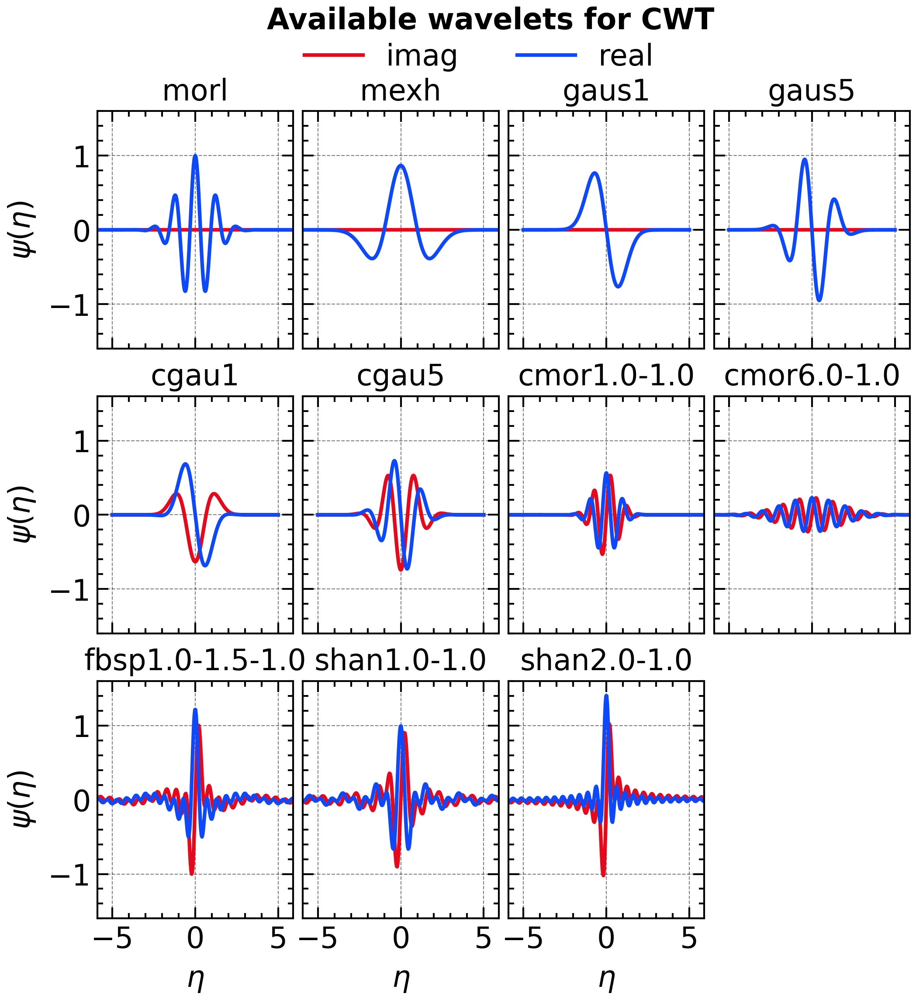
import matplotlib.pyplot as plt
import numpy as np
wavlist = ['cgau1', 'cgau5', 'cgau8', 'cmor1.0-1.0', 'cmor3.0-1.0', 'cmor6.0-1.0', 'morl', 'fbsp1.0-1.5-1.0', 'fbsp2.0-1.5-1.0', 'mexh', 'shan1.0-1.0', 'shan2.0-1.0', 'gaus1', 'gaus5', 'gaus8']
wavlist = ['morl', 'mexh', 'gaus1', 'gaus5', 'cgau1', 'cgau5', 'cmor1.0-1.0', 'cmor6.0-1.0', 'fbsp1.0-1.5-1.0', 'shan1.0-1.0', 'shan2.0-1.0']
cols = 4
rows = (len(wavlist) + cols - 1) // cols
fig, axs = plt.subplots(rows, cols, figsize=figsize_tall,
sharex=True, sharey=True,
gridspec_kw={'wspace': 0.05, 'hspace': 0.20})
for ax, wavelet in zip(axs.flatten(), wavlist):
# A few wavelet families require parameters in the string name
[psi, x] = pywt.ContinuousWavelet(wavelet).wavefun(10)
ax.plot(x, np.imag(psi), 'C1-', label="imag")
ax.plot(x, np.real(psi), 'C0-', label = 'real')
# if np.any(np.imag(psi)):
# Only plot imaginary part if it exists
ax.set_xlabel("$\eta$")
ax.set_ylabel("$\psi(\eta)$")
ax.set_title(wavelet)
ax.set_xlim([-5.9, 5.9])
ax.set_ylim([-1.6, 1.6])
fig.align_labels()
for ax in axs[:, 1:].flatten():
ax.set_ylabel("")
for ax in axs.flatten()[:-cols]:
ax.set_xlabel("")
fig.delaxes(axs.flatten()[-1])
axs.flatten()[1].legend(loc="upper center", ncol=2, bbox_to_anchor = (0.9, 1.4), frameon=False, fontsize=16)
plt.suptitle("Available wavelets for CWT", **title_font)
plt.tight_layout()
# plt.show()
plt.savefig(save_path + 'figure_cwt_family.png',bbox_inches='tight',dpi=300)Discrete Wavelets (DWT)
The discrete lineage begins with the step-like Haar basis (1910). Jan-Olov Strömberg’s 1983 work showed how to sample continuous wavelets without losing orthogonality, paving the way for Ingrid Daubechies’ breakthrough (1988): compactly supported, arbitrarily smooth orthonormal wavelets (db N). Compression soon demanded linear phase, so biorthogonal pairs appeared—the 5/3 tap Le Gall–Tabatabai (1988) for loss-less, and the longer 9/7 Cohen–Daubechies–Feauveau (1992) for lossy JPEG 2000. Stéphane Mallat’s pyramidal algorithm and subsequent wavelet-packet extension (late 1980s–1990) made \mathcal{O}(N) multiresolution analysis practical. Symlets and Coiflets fine-tuned phase and moment symmetry, and Wim Sweldens’ lifting scheme (1995) recast any biorthogonal filter bank as fast, in-place, integer arithmetic—ideal for hardware codecs.
| Wavelet Name | Brief Description | Key Properties | Scale Recurrence Relation |
|---|---|---|---|
| Daubechies (db) | Orthonormal wavelets with compact support; “db1” is Haar wavelet. Higher orders smoother, longer filters. | Orthogonal; asymmetric (except db1); compact support. | \phi(t) = \sqrt{2} \sum_{k} h[k] \phi(2t - k) |
| Symlets (sym) | Modified Daubechies wavelets with improved symmetry, reducing phase distortion. | Orthogonal; near-symmetric; compact support. | \phi(t) = \sqrt{2} \sum_{k} h[k] \phi(2t - k) |
| Coiflets (coif) | Designed for equal vanishing moments in scaling and wavelet functions; smoother approximation. | Orthogonal; near-symmetric; compact support. | \phi(t) = \sqrt{2} \sum_{k} h[k] \phi(2t - k) |
| Biorthogonal (bior & rbio) | Uses separate wavelets for analysis and synthesis, forming dual bases; symmetric filters with linear phase. | Biorthogonal; symmetric; compact support. | \phi_d(t) = \sqrt{2} \sum_{k} h_d[k] \phi_d(2t - k), \phi_r(t) = \sqrt{2} \sum_{k} h_r[k] \phi_r(2t - k) |
| Discrete Meyer (dmey) | Finite approximation of the Meyer wavelet, with excellent smoothness and frequency characteristics. | Orthonormal; nearly symmetric; finite approximation. | Defined by frequency domain filter approximation. |
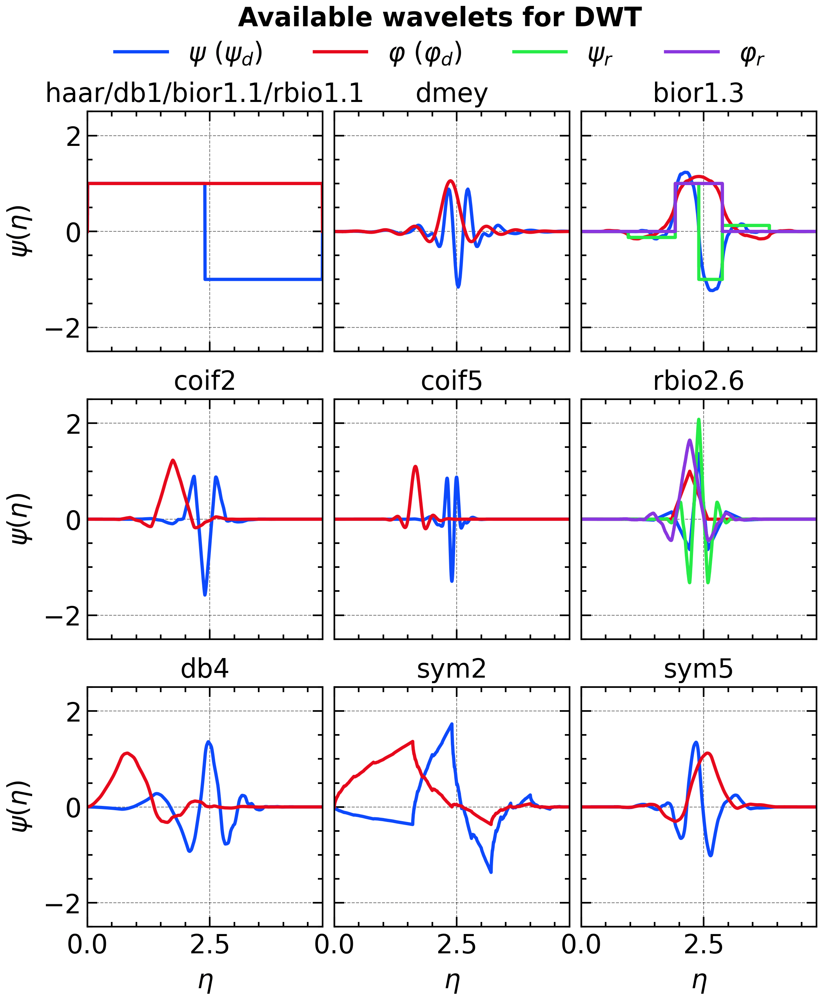
import pywt
import numpy as np
import matplotlib.pyplot as plt
level = 10
selected_dwt_wavelets = [
'haar','dmey',
'bior1.3',
'coif2',
'coif5',
'rbio2.6',
'db4',
'sym2',
'sym5',
]
# ---------------------------- parameters ----------------------------
# selected_dwt_wavelets = [...] # your list
title_font = {"fontsize": 16, "weight": "bold"}
cols = 3
rows = (len(selected_dwt_wavelets) + cols - 1) // cols
x_common_max = 4.8 # the length you want on every axis
# --------------------------------------------------------------------
fig, axs = plt.subplots(rows, cols, figsize=(8, 3.0 * rows),
sharex=True, sharey=True,
gridspec_kw={'wspace': 0.05, 'hspace': 0.2})
for ax, wname in zip(axs.flatten(), selected_dwt_wavelets):
wav = pywt.Wavelet(wname)
# ---------------- fetch wavelet functions -----------------------
if 'bio' in wname: # biorthogonal returns 5 arrays
phi, psi, phi_r, psi_r, x = wav.wavefun(level = level)
elif wname == 'dmey':
phi, psi, x = wav.wavefun(level = 4)
else: # orthogonal families
phi, psi, x = wav.wavefun(level = level)
# ------------- ALIGN SUPPORT: shift to 0, stretch to 4.8 --------
x = x - x[0] # left edge → 0
x = x * (x_common_max / x[-1]) # right edge → 4.8
if wname == 'dmey':
x = x * 4 - 6.5
# ---------------------------- PLOT ------------------------------
ax.plot(x, psi, '-', label=r'$\psi$ ($\psi_d$)')
ax.plot(x, phi, '-', label=r'$\varphi$ ($\varphi_d$)')
if 'bio' in wname: # biorthogonal returns 5 arrays
ax.plot(x, psi_r, '-', label=r'$\psi_r$')
ax.plot(x, phi_r, '-', label=r'$\varphi_r$')
ax.set_title(wname)
ax.set_xlim(0.0, x_common_max)
ax.set_ylim(-2.5, 2.5)
ax.set_xlabel(r'$\eta$')
ax.set_ylabel(r'$\psi(\eta)$')
# ---------- tidy up (delete unused axes, one shared legend) ----------
for ax in axs.flatten()[len(selected_dwt_wavelets):]:
fig.delaxes(ax)
axs.flatten()[0].set_title('haar/db1/bior1.1/rbio1.1')
handles, labels = axs[0, 2].get_legend_handles_labels()
fig.legend(handles, labels, ncol=4, loc="upper center", frameon=False, bbox_to_anchor=(0.5, 0.97))
fig.align_labels()
for ax in axs[:, 1:].flatten():
ax.set_ylabel("")
for ax in axs.flatten()[:-cols]:
ax.set_xlabel("")
plt.tight_layout()
plt.suptitle("Available wavelets for DWT", **title_font)
plt.tight_layout()
# plt.show()
plt.savefig(save_path + 'figure_dwt_family.png',bbox_inches='tight',dpi=300)
plt.show()Vanishing Moment, Orthogonality, and Support:
In the above descriptions on the wavelet functions, several key properties of wavelets are frequently mentioned. Here’s a brief explanation of these terms:
Vanishing Moments (p): The number of moments (derivatives) that vanish at zero, indicating how well the wavelet can represent polynomial functions. M_k=\int_{-\infty}^{+\infty} t^k \psi(t) dt = 0 \quad \text{for } k = 0, 1, \ldots, p-1
M_p=\int_{-\infty}^{+\infty} t^p \psi(t) dt \neq 0
Orthonormal: Wavelets that form an orthogonal basis with unit norm, useful for efficient reconstruction without redundancy. \int_{-\infty}^{+\infty} \psi_i(t) \psi_j(t) dt = \delta_{ij}
Bi-orthogonal: Involves two wavelet sets forming dual bases, one set for analysis and another for synthesis; allows symmetric filters and linear phase. \int_{-\infty}^{+\infty} \phi_{d,i}(t) \psi_{r,j}(t) dt = \delta_{ij}\\ \int_{-\infty}^{+\infty} \phi_{r,i}(t) \psi_{d,j}(t) dt = \delta_{ij}
Support: The region in time where the wavelet is non-zero.
Infinite Support: Wavelets extending indefinitely in time, typically with exponential or Gaussian decay.
Finite Support: Wavelets explicitly confined within a finite time interval, completely vanishing outside this interval.
More Details about Morlet wavelet
If you want to go deeper into the Morlet wavelet, here are some additional details, which could be especially useful for understanding its properties and applications:
- Admissibility: The strict form of Morlet wavelet should satisfy the admissibility condition, which requires the wavelet to have zero mean. However, the standard Morlet wavelet does not strictly satisfy this condition because
\begin{align*} \int_{-\infty}^{+\infty} \psi_{approx}(\eta) \mathrm{d}\eta &= \sqrt{2}\pi^{1/4} e^{-\omega_0^2/2}\\ &= \int_{-\infty}^{+\infty} \boxed{\pi^{-1/4}e^{-\omega_0^2/2}e^{-\eta^2/2}} \mathrm{d}\eta = \int_{-\infty}^{+\infty} \delta\psi(\eta) \mathrm{d}\eta\\ &\neq 0 \end{align*}
To address this, a correction term is often subtracted to ensure zero mean. \psi_{adm}(\eta)=\psi_{approx}(\eta)-\delta\psi(\eta)=\pi^{-1/4}e^{-\eta^2/2}\left[e^{i\omega_0\eta}-e^{-\omega_0^2/2}\right]
- Normalization: To ensure the corrected morlet wavelet has unit energy, we normalize it so that its L2 norm equals 1. The normalization factor is given by the inverse of the square root of the integral of the squared magnitude of the wavelet.
\psi(\eta)=\frac{\psi_{adm}}{\left[{\int_{-\infty}^{+\infty} [\psi^\prime(\eta)]^2 \mathrm{d}\eta}\right]^{-1/2}}=c_{\omega_0}\psi_{adm} = \boxed{\left(1+e^{-\omega_0^2}-2e^{-\frac{3}{4}\omega_0^2}\right)^{-{1}/{2}}}\psi_{adm}
The Final form of Morlet wavelet is: \psi(\eta)=ta)={\left(1+e^{-\omega_0^2}-2e^{-\frac{3}{4}\omega_0^2}\right)^{-{1}/{2}}}\pi^{-1/4}e^{-\eta^2/2}\left[e^{i\omega_0\eta}-e^{-\omega_0^2/2}\right] when \omega_0\geq 5, the correction term e^{-\omega_0^2/2} is negligible, and the approximate form \psi_{approx} is often used directly.
- Frequency Response: Another issue that must be considered is the frequency response of the corrected Morlet wavelet, which is no longer a simple Gaussian centered at \omega_0. Instead, it has a more complex shape due to the subtraction of the correction term:
\hat{\psi}(\omega)=c_{\omega_0}\pi^{-1/4}\left[e^{-(\omega-\omega_0)^2/2}-e^{-\omega_0^2/2}e^{-\omega^2/2}\right]
This affects the relationship between scale and equivalent Fourier period, as well as the central frequency of the wavelet.
- Equivalent Fourier Period: For Morlet wavelets with a small \omega_0, the Gaussian envelope e^{-\eta^2/2} dominates over the carrier oscillation e^{-i\omega_0\eta}. As a result, the CWT power spectrum of an input sine wave no longer peaks at the naive period T = 2\pi/\omega_0. Instead, its maximum shifts to the equivalent Fourier period T_{\mathrm{eq}}, which more accurately captures the signal’s power distribution in the frequency domain. \begin{align*} s=\arg\max_s \left|\hat{\psi}\left(\frac{2\pi s}{T_{eq}}\right)\right|\\ \end{align*} The equivalent Fourier period can be found by solving the equation:
$$